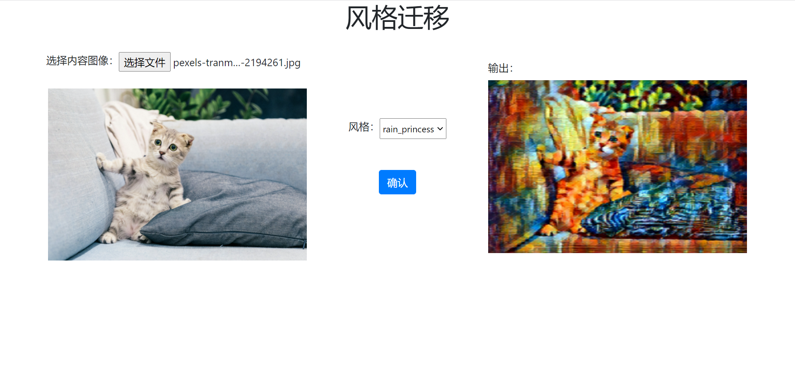

模型部署¶
模型训练好后，需要经过“模型部署”才能够集成到产品中并上线。因为产品上线时的软硬件环境、模型与业务模块的对接方式都可能变化，所以部署的解决方案也多种多样。比如某些方案会将训练好的模型转为其他格式（如 ONNX）后，再依赖特定的 runtime 部署；某些方案会直接使用 C/C++ 等能生成 native code 的语言重新实现模型，并引入汇编级优化，以追求硬件适配或部署性能。
OneFlow 通过对接了 Triton Inference Server，为模型提供服务。
OneFlow 用户训练好模型后，可以直接通过 Triton 部署模型，并借助 Triton 丰富的特性，如 Dynamic batching、Model Pipelines、HTTP/gRPC 接口等，并快速高效地集成到线上产品中。
本文内容组织如下：
- OneFlow 部署快速上手
- OneFlow Serving 架构介绍
- OneFlow 从训练到部署流程解析
OneFlow 部署快速上手¶
OneFlow Cloud 上准备了一个 OneFlow Serving: Neural Style Transfer 项目，参照项目说明用户可以一键部署项目，并且查看项目运行效果。

分析项目代码可以发现，有以下几个关键处：
-
run_cloud.sh中启动了 Triton 服务器与 WEB 应用服务器：/opt/tritonserver/bin/tritonserver --model-store $(pwd)/model_repo > 1.txt & python3 server.py -
server.py中只是简单和普通的 URL 路由，真正做推理工作是由infer.py中的stylize完成的。stylize函数内部，通过 HTTP 与 Triton 服务器交互得到推理结果。def stylize(content_path, output_path, style='udnie'): triton_client = httpclient.InferenceServerClient(url='127.0.0.1:8000') ... inputs.append(httpclient.InferInput('INPUT_0', image.shape, 'FP32')) ... outputs.append(httpclient.InferRequestedOutput('OUTPUT_0', binary_data=True)) ... -
预训练模型放置在
model_repo下，它按照 Triton 的约定组织格式
这个简单的在线示例展示了 OneFlow 模型如何通过 Triton 部署，同时也展示业务模块如何与 Triton 服务端交互获取推理结果。
如果你想在本地运行这个例子，也可以下载 demo.zip，解压后运行其中的 run.sh 文件。
bash run.sh
接下来，我们会详细介绍 OneFlow 从训练到部署的详细流程。
OneFlow 从训练到部署流程解析¶
我们首先通过下图总体了解 OneFlow 与 Triton 的关系。

从上图可以知晓，Triton 处于联接客户端与 OneFlow 的位置：Triton 提供了 HTTP、gRPC 以及 C 接口，使得用户可以灵活地发起推理请求并得到结果。
在 Triton 的架构中，OneFlow 与 Model Repository 一起，为 Triton 提供后端推理能力。Triton 对 Model Repository 的组织格式有预设的要求，OneFlow 提供了对应的接口，将训练好的模型导出为 Triton 要求的组织格式。
此外，Triton 内部还提供了任务调度等的内置功能，使得性能有保证，具体可以参考 Triton 的官方文档。
了解这些基本概念后，让我们详细解析 OneFlow 从模型训练到部署的流程：
- 模型保存
- 模型配置
- 启动服务
- 客户端发送请求
模型保存¶
如果是 Graph 模式下训练得到的模型，可以直接通过 oneflow.save 导出为部署所需格式；如果是 Eager 模式下训练得到的模型，简单转换后，可以导出为所需格式。具体操作方法，请参阅 Graph 与部署 相关内容。
模型配置¶
Triton 对模型的目录组织结构有一定要求，我们需要按照 Triton 的约定 组织模型目录结构，并且编写相关配置文件。
目录组织结构
在本示例程序中，模型文件放置在 model_repository 目录下，它的组织结构符合 Triton 的约定，让我们看看其组织方式并解释：
$ tree -L 3 model_repository/
model_repository/
└── fast_neural_style
├── 1
│ └── model
└── config.pbtxt
model_repository是模型仓库根目录，在 triton 启动时，可以通过--model-repository选项指定模型仓库根目录fast_neural_style是模型仓库中的一个模型。一个模型仓库下，可以有多个模型，每个一级子目录就是一个模型，在这里我们只准备了fast_neural_style这一个模型- 其中的
1/model目录，就是我们之前通过flow.save(graph, "1/model")保存的模型。其中的1为版本号，Triton 中约定，一个模型目录下可以有多个模型版本，模型版本的文件夹名必须为 纯数字。在模型版本文件夹下，需要放置名为model的文件夹，其中保存有模型参数和计算图 config.pbtxt是一个纯文本文件，用于配置该模型仓库的基本信息，我们接下来详细介绍
模型仓库配置
config.pbtxt，它是一个 protobuf 文本格式的配置文件，通过编写这个文件可以配置模型服务的信息，如指定硬件、输入输出等信息。这个例子中的内容如下：
name: "fast_neural_style"
backend: "oneflow"
max_batch_size: 1
input [
{
name: "INPUT_0"
data_type: TYPE_FP32
dims: [ 3, 256, 256 ]
}
]
output [
{
name: "OUTPUT_0"
data_type: TYPE_FP32
dims: [ 3, 256, 256 ]
}
]
instance_group [
{
count: 1
kind: KIND_GPU
gpus: [ 0 ]
}
]
接下来，我们依次解释其中的配置项。
name: "fast_neural_style"
name 字段用于指定模型。这行说明使用 fast_neural_style 这个模型，模型名字需要和上文介绍的模型文件夹名一致。
backend: "oneflow"
backend 用于指定 Triton 后端，用 OneFlow 部署，此字段必须指定为 oneflow。
接着，需要定义模型的输入和输出形状。下面的输入输出名字字段，我们需要按照模型的输入输出顺序填写，并且命名格式是 INPUT_<index> 和 OUTPUT_<index>，用 <index> 表示模型输入的顺序，默认从 0 开始。data_type 字段定义了数据类型，dims 字段定义了张量的形状。
input [
{
name: "INPUT_0"
data_type: TYPE_FP32
dims: [ 3, 256, 256 ]
}
]
output [
{
name: "OUTPUT_0"
data_type: TYPE_FP32
dims: [ 3, 256, 256 ]
}
]
以上的模型名字、推理后端、输入输出配置是最基础的配置，配置完成后，已经可以开始工作。
之后的 instance_group 用于配置硬件信息。
instance_group [
{
count: 1
kind: KIND_GPU
gpus: [ 0 ]
}
]
它意味着我们实例化 1 个模型，并将它放置在 0 号 GPU 设备上。更多灵活调配的选项，请参考 Triton Inference Server 的模型配置文档。
启动服务¶
OneFlow Serving 提供了 Docker 镜像，使用 Docker 启动模型服务。按照上面的目录结构组织好文件之后，就可以映射路径到容器中，启动服务。
docker run --rm --runtime=nvidia --network=host -v$(pwd)/model_repository:/models \
oneflowinc/oneflow-serving /opt/tritonserver/bin/tritonserver --model-store /models
使用下面的命令，可以检查模型服务是否启动。看到 http 200 状态码，那么模型服务已经启动。
curl -v localhost:8000/v2/health/ready
向 Triton Server 发送请求¶
在这个例子中，我们使用 tritonclient 与 Triton Server 交互。需要先安装一个 python 包。
pip3 install tritonclient[all]
实际上，客户端可以通过 HTTP、gRPC 或者 C API 等多种方式 与 Triton Server 交互，具体内容可以参阅以上文档。
以下代码，是图片进行风格化的核心部分，可以将命令行传递来的图片文件，进行风格化。完整代码可以在 云平台 上查看，或者下载 demo.zip
#...
import tritonclient.http as httpclient
if __name__ == '__main__':
parser = argparse.ArgumentParser()
parser.add_argument('--image',
required=True,
help='the image to transfer style')
FLAGS = parser.parse_args()
triton_client = httpclient.InferenceServerClient(url='127.0.0.1:8000')
image, w, h = load_image(FLAGS.image, 256, 256)
inputs = []
inputs.append(httpclient.InferInput('INPUT_0', image.shape, 'FP32'))
inputs[0].set_data_from_numpy(image, binary_data=True)
outputs = []
outputs.append(httpclient.InferRequestedOutput('OUTPUT_0', binary_data=True))
results = triton_client.infer('fast_neural_style', inputs=inputs, outputs=outputs)
output0_data = results.as_numpy('OUTPUT_0')
image = recover_image(output0_data, h, w)
cv2.imwrite('result.jpg', image)
首先，创建一个 triton_client，其中的 127.0.0.1:8000 是 Triton 服务的默认端口
triton_client = httpclient.InferenceServerClient(url='127.0.0.1:8000')
然后，通过 triton_client.infer 接口，可以向 Triton Server 发起推理请求并获取输出。
一条 Tirton 推理请求，需要指定模型、输入和输出部分。
可以看到以下代码，主要是在构造输入、输出对象，它们的配置与先前在 config.pbtxt 中的配置一致。并最终通过 triton_client.infer('fast_neural_style', inputs=inputs, outputs=outputs) 发起推理请求，其中的 fast_neural_style 也与 config.pbtxt 中的配置一致。
inputs = []
inputs.append(httpclient.InferInput('INPUT_0', image.shape, 'FP32'))
inputs[0].set_data_from_numpy(image, binary_data=True)
outputs = []
outputs.append(httpclient.InferRequestedOutput('OUTPUT_0', binary_data=True))
results = triton_client.infer('fast_neural_style', inputs=inputs, outputs=outputs)
获取到的推理结果，转换格式并保存为输出图片：
output0_data = results.as_numpy('OUTPUT_0')
image = recover_image(output0_data, h, w)
cv2.imwrite('result.jpg', image)
我们用下面的命令，对指定的图片进行推理风格化，结果将会保存在 result.jpg 下面。
$ curl -o cat.jpg https://images.pexels.com/photos/156934/pexels-photo-156934.jpeg
$ python infer.py --image cat.jpg